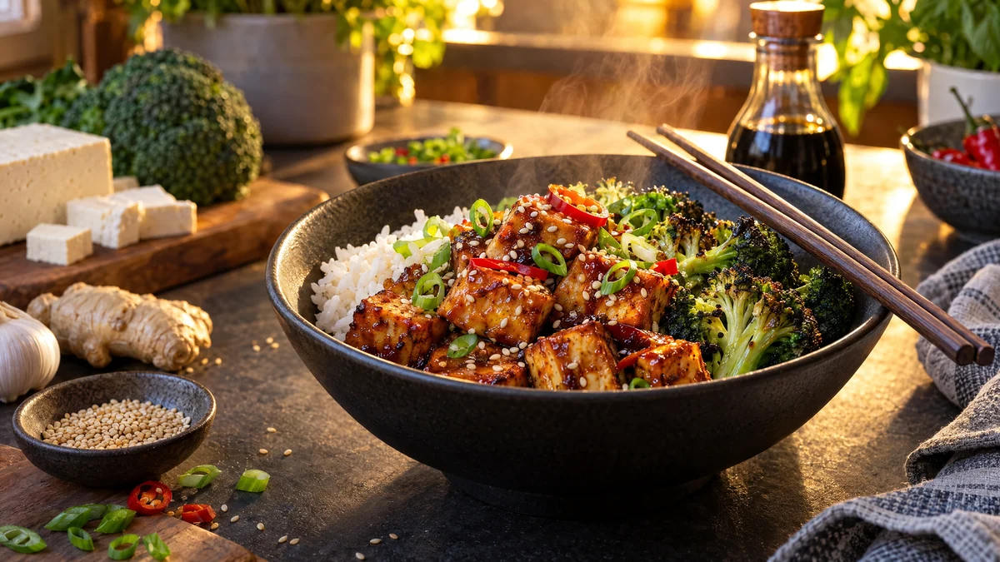

RESTFEST · RECEPTHuvudrätt
Glaserad ugnstofu med broccoli, ris och sesam
Ett paket tofu, ett broccolihuvud och en påse ris. Tofun vänds i lite majsstärkelse och rostas krispig i ugnen, och vänds sedan i en blank, söt och salt glasyr av soja, sirap, vitlök och ingefära. Med rostad broccoli, sesamfrön och salladslök ser den ut som från en asiatisk restaurang och tar fyrtio minuter.
- Förberedelse
- 20 min
- Tillagning
- 30 min
- Portioner
- 4
- Nivå
- Nybörjare
 Det här behöver du
Det här behöver du
JÄMFÖRT MED DIN KYL
Tryck på + vid det du behöver köpa.
Tofu
Glasyr
- Allroundmarinaden i recept 95, gjord med sirap, eller:
-
-
-
-
-
-
Broccoli och ris
Till servering
Gör så här
- Sätt ugnen på 225 grader. Klä två plåtar med bakplåtspapper.
- Linda in tofun i en ren kökshandduk och lägg något tungt ovanpå, till exempel en gjutjärnspanna, i 15 minuter. Ju torrare tofu, desto krispigare blir den.
- Skär tofun i tärningar, ca 2 cm. Vänd dem i olja, salt och majsstärkelse på den ena plåten och bred ut dem med lite mellanrum.
- Rosta tofun i mitten av ugnen i 25–30 minuter. Vänd tärningarna halvvägs.
- Dela broccolin i buketter. Skala stjälken och skär den i skivor. Vänd allt i olja och salt på den andra plåten och rosta de sista 12–15 minuterna, tills kanterna är krispiga.
- Koka riset enligt förpackningen.
- Koka upp glasyren i en stor stekpanna och låt den puttra i 2–3 minuter, tills den är sirapsaktig. Vänd ner den heta tofun och rör tills alla tärningar är blanka.
Dekoration och servering
- Lägg upp ris, broccoli och tofu bredvid varandra i djupa skålar, så att färgerna syns.
- Strö över sesamfrön, tunt skivad salladslök och chili.
- Ringla glasyren som blir kvar i pannan över broccolin.
- Rester av tofun är goda kalla i en sallad eller matlåda.
Mått och ugnstemperaturer
Måtten är svenska (dl, msk, tsk, krm). Ugnstemperaturerna gäller vanlig ugn med över- och undervärme; med varmluft, sänk med 20 grader.